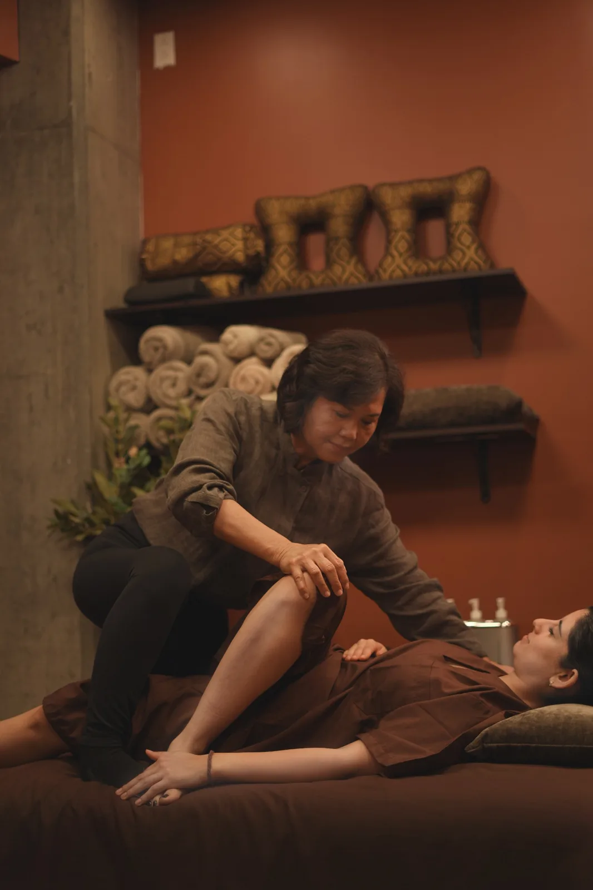

Le Rituel Harmonie et Légèreté
Rituel jambes et corps90 min · 190 $
Retrouvez une sensation de légèreté grâce à un massage rythmé des jambes, suivi d’un soin enveloppant du corps. Idéal après une journée active.
Réservez
BAAN D’OR · MONTRÉAL
Une parenthèse pour soi, un moment à deux ou un rituel à retrouver. Choisissez votre prochaine expérience de bien-être thaïlandais à Montréal.
Découvrir les forfaits →90 MINUTES POUR SOI
Quatre expériences à choisir selon vos envies, chacune conçue pour une personne.
90 min · 190 $
Retrouvez une sensation de légèreté grâce à un massage rythmé des jambes, suivi d’un soin enveloppant du corps. Idéal après une journée active.
Réservez
90 min · 190 $
Un moment de détente associant massage corporel et gestes ciblés sur l’abdomen, pour une expérience douce et recentrée.
Ne convient pas aux femmes enceintes.
Réservez
90 min · 190 $
Une attention délicate au visage, au cou et aux épaules pour retrouver une sensation de détente et de fraîcheur.
Réservez
90 min · 190 $
Composez une séance de 90 minutes en associant deux soins selon vos préférences.
Réservez
UNE ESCAPADE À DEUX
Partagez un rituel spa de 90 minutes pour deux, suivi d’une expérience gastronomique en quatre services chez Shushuto avec une bouteille de champagne.
700 $ pour deux
Planifier notre escapade →LE BIEN-ÊTRE AU FIL DES VISITES
Faites du bien-être un rituel régulier. Choisissez votre Trilogie : trois séances de 60 minutes ou trois séances de 90 minutes.
À partir de 390 $ · 3 séances
Découvrir les forfaits30 minutes offertes
Pour votre première visite, choisissez Le Rituel Signature Baan d’Or ou L’Héritage Royal Thaï et profitez de 90 minutes au prix de 60.
Appelez-nous
9 visites · la 10ᵉ offerte
Après neuf visites, profitez d’une séance de 90 minutes offerte lors de votre dixième visite.
RéservezNon. Il combine deux soins dans une séance de 90 minutes pour une personne.
King & Queen Sanctuary réunit un rituel spa pour deux et une expérience gastronomique chez Shushuto. Contactez-nous pour organiser votre visite.
Le bouton Acheter le forfait vous dirige vers la page d’achat Fresha.
Baan d’Or · 2602, rue Saint-Patrick, Montréal
Découvrir tous nos soins →